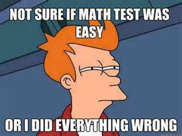

I love to show my power in this video
another math man video
MATH MATH MATH, A quote from Math Man. This world is surrounded by Math and the universe is surrounded by Math. Toooo complete the universe you must do your math homework because math man is watching you and if he finds out that you did not do your math homework he will come for you and force you to eat a Math test paper. 
Funny quote aaaaaa, yes but math really is an expert at math, math is easy for him, but it can also be easy for you to, because Math Man studied for years and years in a cave, after he found out that he had math powers.